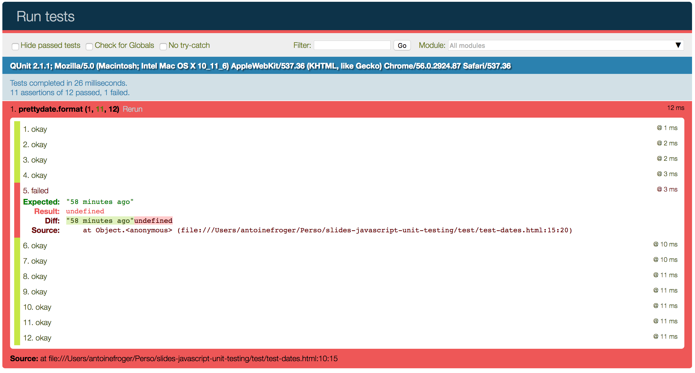
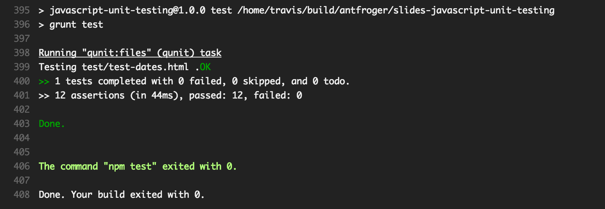
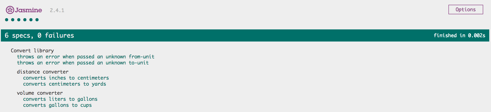
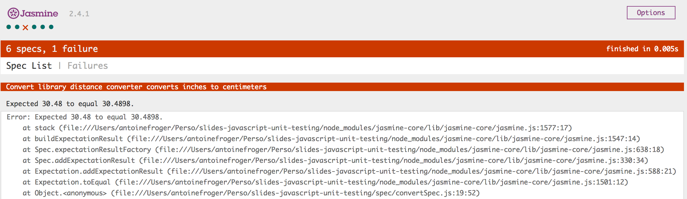
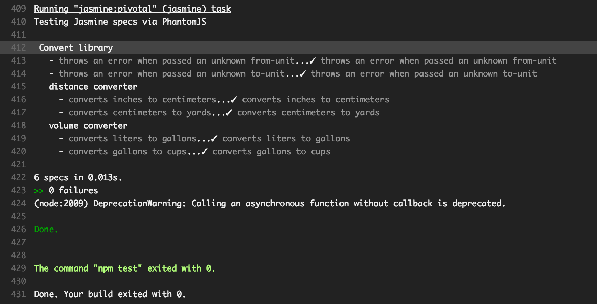

NEWCRAFT


Some frameworks
JavaScript Unit Testing framework
BDD testing framework
BDD testing framework
QUnit
Few simple tests in a fresh repository
Browser

Run the tests in a browserTravis CI

Run the tests with Travis CIJasmine
Few simple tests in a fresh repository
Browser
 
Run the tests in a browserTravis CI

Run the tests with Travis CI